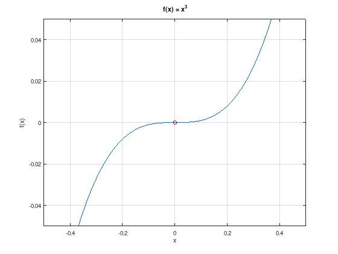

Unconstrained minimization problems¶
This section considers the minimization of a function \(f \colon \mathbb{R}^{n} \to \mathbb{R}\) without any constraint functions.
Necessary conditions for a local minimum¶
Zero slope at a local minimum \(x^{*}\):
Theorem 2: 1st order optimality condition
Let the open set \(X \subset \mathbb{R}^{n}\) and let \(f \in C^{1}(\mathbb{R}^{n},\mathbb{R})\). If the point \(x^{*} \in X\) is a local minimum of \(f\) over \(X\), then \(\nabla f(x^{*}) = 0\).
Proof:
Let \(d \in \mathbb{R}^{n} \setminus \{0\}\). Because \(X\) is an open set and \(x^{*}\) is a local minimum \(x^{*} + td \in X\), \(x^{*} - td \in X\), \(f(x^{*} + td) - f(x^{*}) \geq 0\), and \(f(x^{*} - td) - f(x^{*}) \geq 0\) hold for sufficiently small \(t > 0\). Because \(f \in C^{1}(\mathbb{R}^{n},\mathbb{R})\) it follows
and
and it follows \(\nabla f(x^{*}) = 0\).
Non-negative curvature at a local minimum \(x^{*}\):
Theorem 3: 2nd order optimality condition
Let the open set \(X \subset \mathbb{R}^{n}\) and \(f \in C^{2}(\mathbb{R}^{n},\mathbb{R})\). If the point \(x^{*} \in X\) is a local minimum of \(f\) over \(X\), then the Hessian matrix \(\nabla^{2} f(x^{*})\) is positive semi-definite.
Proof:
Let \(d \in \mathbb{R}^{n} \setminus \{0\}\) and \(|t|\) sufficiently small (such that \(x^{*} + td \in X\) for all \(t\) with \(|t| < t_{0}\)).
Using Taylor’s theorem (differentiation with chain-rule) and regarding \(\nabla f(x^{*}) = 0\) gives
If \(\nabla^{2} f(x^{*})\) was not positive semi-definite, there exists a \(d \in \mathbb{R}^{n} \setminus \{0\}\) with \(d^{T}\nabla^{2} f(x^{*})d < 0\). This is a contradiction for the minimality of \(x^{*}\).
Note
There may exist points that satisfy the necessary 1st and 2nd order conditions but are not local minima. For example:
x = linspace (-0.5, 0.5, 50);
plot (x, x.^3);
hold on;
plot (0, 0, 'ro');
grid on;
xlim ([-0.5, 0.5]);
ylim ([-0.05, 0.05]);
xlabel ('x');
ylabel ('f(x)');
title ('f(x) = x^3');

Sufficient condition for a strict local minimum¶
Positive curvature at a local minimum \(x^{*}\) (strictly convex):
Theorem 4: 2nd order sufficient optimality condition
Let \(f \in C^{2}(\mathbb{R}^{n},\mathbb{R})\) and \(x^{*} \in X \subset \mathbb{R}^{n}\) with \(\nabla f(x^{*}) = 0\) and \(\nabla^{2} f(x^{*}) \succ 0\) (positive definite), then \(x^{*}\) is a strict local minimum of \(f\) over \(X\).
Proof:
Application of the Rayleigh–Ritz method, for symmetric matrix \(A \in \mathbb{R}^{n \times n}\) and \(d \in \mathbb{R}^{n} \setminus \{ 0 \}\) there is
where the minimum or maximum is attained for the respective eigenvectors \(d\) of the minimal and maximal eigenvalue.
For a positive definite, symmetric matrix \(A = \nabla^{2} f(x^{*})\) there is \(\lambda := \lambda_{\min}(A) > 0\):
Applying Taylor’s theorem to \(f\) at \(x^{*}\) (with remainder) gives
with \(\tilde{x} := x^{*} + \theta d\), \(0 < \theta < 1\).
Using \(\nabla f(x^{*}) = 0\) and an expansion:
Because the Hessian matrix is continuous, there is \(f(x^{*} + d) > f(x^{*})\) for all \(d \neq 0\) with a sufficiently small norm.
Note
The sufficient condition is not necessary. See for example \(f(x) = x_{1}^{2} + x_{2}^{4}\), where \(x = 0\) is a strict local minimum. However, the Hessian matrix is not positive definite.